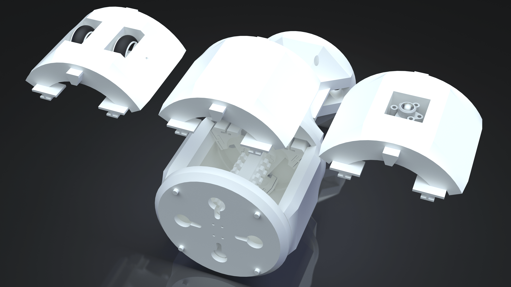

Optional parts
Different Bellies
Additional parts are provided, both as a source of inspiration and as a quick way to implement a working prototype. The belly of the robot (called fleshBottom) can be designed according to the application. Three models are provided in the current project of OPPAS.
| Optional part | Description |
|---|---|
| fleshBottomGeneric | A bottom part without any additional component. |
| fleshBottomTwoWheels | A bottom part with two wheels to provide anisotropic friction with the ground. |
| fleshBottomBearing | A part with a (Tamiya) spherical bearing. The objective is to remove the friction altogether. The model of the bearing can be found in the Tamiya 70144 Caster Ball project at GRABCAD. |

Tail
The tail's design would depend on the user's requirements. For completeness' sake, we provide a tail design currently being used for our research. The tail's parameters are the same as previous parts but is provided as a separate file (to keep the main file of the module of OPPAS as fast and small as possible).
The current implementation of the tail includes a 'base' (e.g., for a microcontroller board) and two toggle switches.